- Recall:
- Parameter passing mechanism = agreement between the calling method and the called method on how a parameter is passed between them
- The agreement used in
the Pass-by-reference mechanism:
- For the calling method:
- The calling method
creates
the parameter variables
for the called method,
.... and
- The calling method copies the reference (= address) of the actual parameter into the formal parameter
- The calling method
creates
the parameter variables
for the called method,
.... and
- For the called method:
- First, the called method
uses the reference (= address)
stored in the parameter variables
to
locate
the
actual parameter
- Once the actual parameter have been located, the called method can subsequently obtain the information from the actual variables
- First, the called method
uses the reference (= address)
stored in the parameter variables
to
locate
the
actual parameter
- For the calling method:
- Fact:
- The Java programming language
only provides the
pass-by-value mechanism
It does not provide the pass-by-reference mechanism
- The Java programming language
only provides the
pass-by-value mechanism
- Nevertheless:
- It is important to
know
the pass-by-reference mechanism
We are --- after all --- trying to teach you Computer Science, and not Java programming.
- It is important to
know
the pass-by-reference mechanism
- I will now show you an example
of the Pass-by-reference mechanism
The programming language that I will use is Java -- because you are familiar with Java.
But realize that:
- The example is
purely hypothetical
--- because ....
Java does not support Pass-by-reference
- The example is
purely hypothetical
--- because ....
- Example (hypothetical) program:
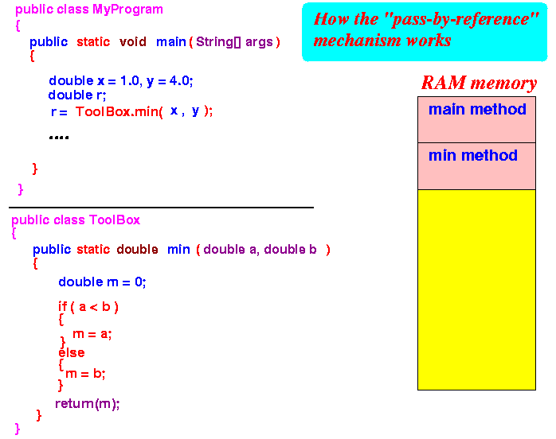
- When main starts running,
it will first create its
local variables:
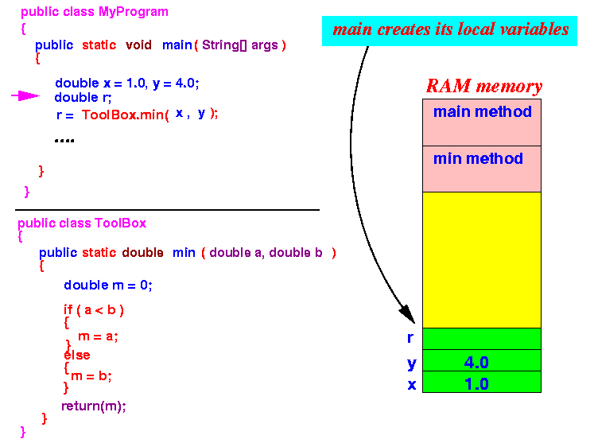
- We need to know the
address of each variable
to expose the details of the
pass-by-reference mechanism.
Let us assume that the addresses of the variables are as follows:
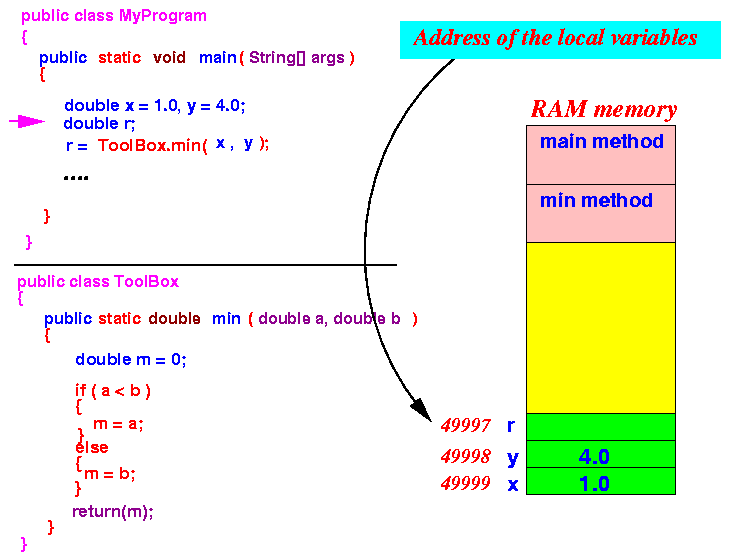
- When execution reaches the
method call ToolBox.min(x,y),
the Pass-by-reference mechanism
first creates the
parameter variables:
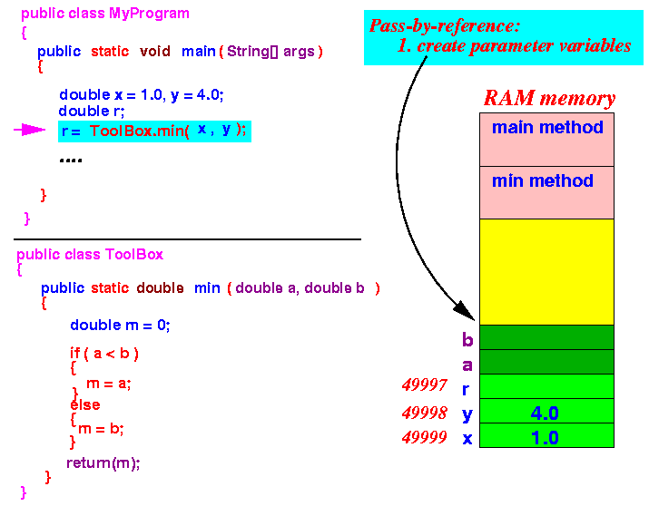
- Then
the Pass-by-reference mechanism
copies the reference of
the
actual parameter to
the corresponding
formal parameter:
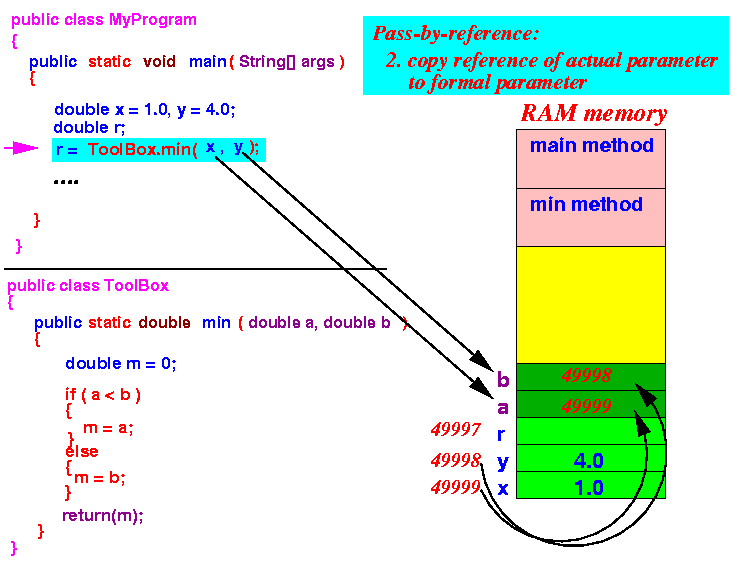 Notice that:
- The parameter variables
(a and
b)
contains the
addresses
of the actual parameters
- The parameter variables (a and b) call tell us where to find the information that we need !!!
- The parameter variables
(a and
b)
contains the
addresses
of the actual parameters
- The method invocation mechanism is
completed as usually with
the following steps:
- Save the return address on the
stack:
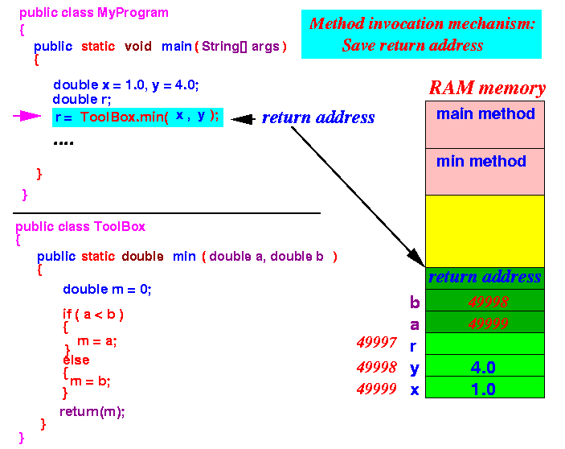
- Jump to the called method:
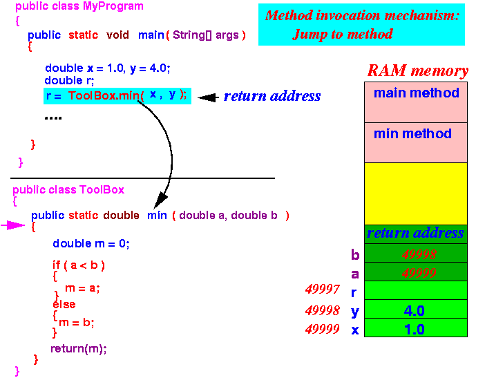
- When the min method executes,
it will create its local variable
m:
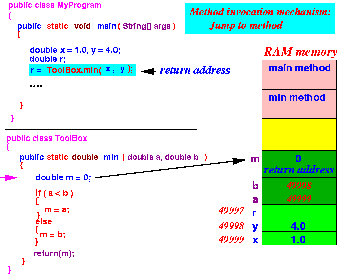
- Save the return address on the
stack:
- How the called method
uses the parameter variables:
- To access the
information
passed to the method,
we first use
the reference information
stored in the parameter variables
to locate the
actual parameters :
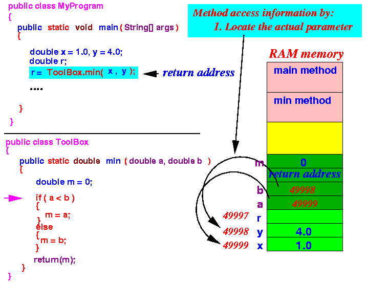
- Then it access the
information
using the
a actual parameter :
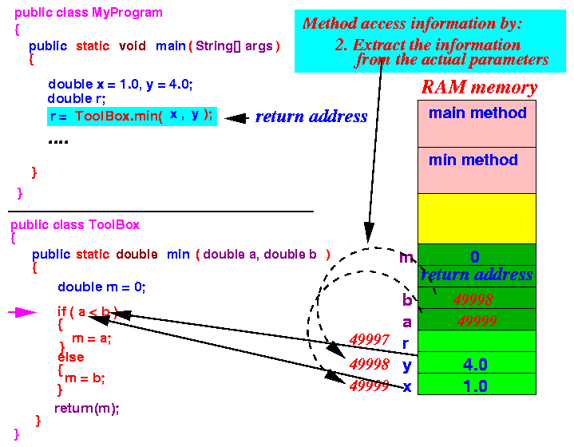
- To access the
information
passed to the method,
we first use
the reference information
stored in the parameter variables
to locate the
actual parameters :
- Consider the following program
(again: hypothetical because
Java does
not support
pass-by-reference):
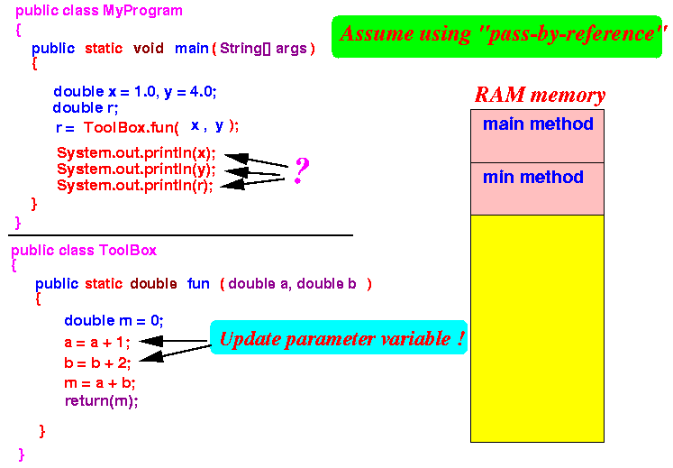 Questions:
- What reference is printed by the statement System.out.println(x); ?
- What reference is printed by the statement System.out.println(y); ?
- What reference is printed by the statement System.out.println(r); ?
Answer:
2.0 (the value in x is CHANGEDD !!!!!!) 6.0 (the value in y is CHANGEDD !!!!!!) 8.0 (= 2.0 + 6.0)
Did you understand why the update statements "a = a + 1" and "b = b + 2" change the actual parameters x and y ???
- According to the
Pass-by-reference example above,
when the ToolBox.min method
starts running, the following
variables have been
created on the System Stack:
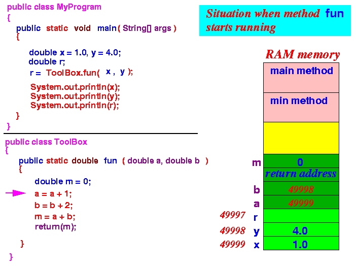
- Notice that:
- The parameter variables a and
b in the
fun method
reference to the
local variables x and
y,
respectively, inside the
main method
- Therefore,
we will:
- use the local variable x in an operation that involves the parameter variable a
- use the local variable y in an operation that involves the parameter variable b
- The parameter variables a and
b in the
fun method
reference to the
local variables x and
y,
respectively, inside the
main method
- The assignment statement:
a = a + 1;
will change the values of the actual parameter variable x through the following mechanism:
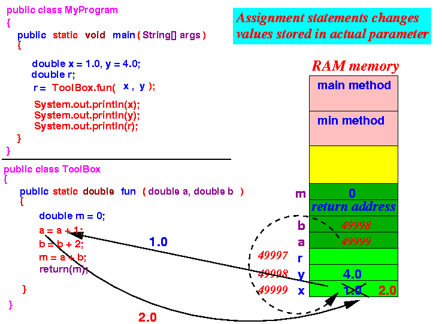
Similarly, the assignment statement:
b = b + 1;
will change the values of the actual parameter variable y to 6.0 (not shown)
- Notice that:
- The values in the
actual parameters (x and
y)
are unchanged !!!
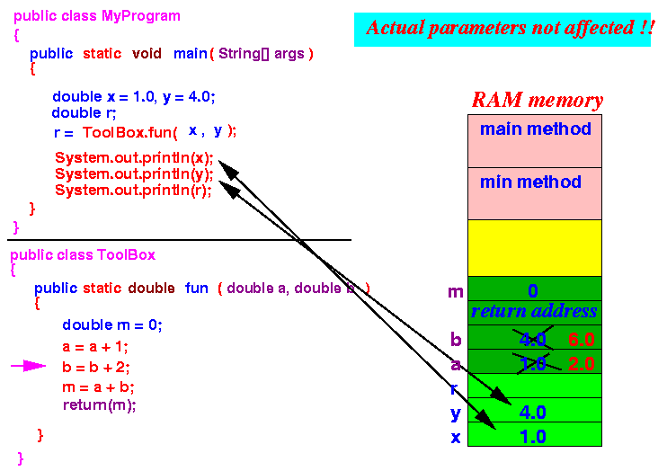
That's why, if we could use the pass-by-reference mechanism, the statements would print:
System.out.println(x); ---> prints 2.0 System.out.println(y); ---> prints 6.0
- The values in the
actual parameters (x and
y)
are unchanged !!!
- I can show you
the difference between
- Pass-by-value, and
- Pass-by-reference
using the C++ language (because C++ provide both mechanisms)
- C++ programs of the above examples:
Pass-by-value Pass-by-reference // No & means: pass-by-value double fun ( double a, double b ) { double m; a = a + 1; b = b + 2; m = a + b; return(m); } int main(int argc, char **argv) { double x = 1.0, y = 4.0;; double r; r = fun( x, y ); cout << x << endl; cout << y << endl; cout << r << endl; }// With & means: pass-by-reference double fun ( double & a, double & b ) { double m; a = a + 1; b = b + 2; m = a + b; return(m); } int main(int argc, char **argv) { double x = 1.0, y = 4.0;; double r; r = fun( x, y ); cout << x << endl; cout << y << endl; cout << r << endl; }Output: 1 4 8Output: 2 6 8
- Example Program:
(Demo above code)

- C++ Prog file using pass-by-value: click here
- C++ Prog file using pass-by-reference: click here
How to run the programs:
- Right click on links and
save in a scratch directory
- To compile:
- CC -o pass-by-value pass-by-value.C
- CC -o pass-by-ref pass-by-ref.C
- To run:
- pass-by-value
- pass-by-ref